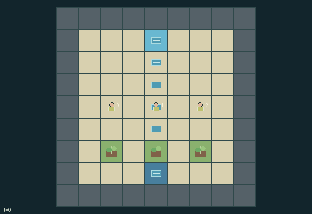

GI080 · Canal Charters | A board of water, rights and consequences

Original recording scope: Original replay view · Mode: Fixed-script demonstration
Additional generated state replay (different trajectory / full-state debug)

Earn own-farm harvests and access income while constructing and scheduling the shared canal network. Collective completion occurs when every farm has three harvests before flood closure.
Identity and original contract
3 independently actionable roles; 13 discrete commands per role; 435 native observation columns per role; original horizon 120 steps. Declared per-step reward range: -3 to 3. Observation regime: fully_observable.
Source SHA-256: 9f565752dd7ac1a41501c7c13853d168a668acc5d657f214a13be961c5f32f53
The objective, rewards, population, map and horizon remain original. A preview is not a success claim.
Objective and gameplay
Earn own-farm harvests and access income while constructing and scheduling the shared canal network. Collective completion occurs when every farm has three harvests before flood closure.
Directed, shuttered, owned conduits route a conserved water resource one edge per hydraulic pulse. Construction and reorientation change other farms future supply. Foreign passage and rotation consume a coin and pay the owner; irreversible public charters remove that barrier.
- Players act in order 0,1,2. Other players supply no-op. Pawns cannot overlap, and actions affect their actual current tile.
- A conduit costs one of six finite kits plus one coin. Its direction, owner and shutter persist on the board.
- Every third turn, the spring adds two water. An open conduit sends up to two stored water one edge into a connected conduit, farm or drain.
- Flows are simultaneous and conserve units until farm consumption, bailing, drainage or overflow. Every tile stores at most six water.
- Each two water reaching a farm produces one harvest and two coins for its owner. Initial public trunk supplies the middle farm; branches and rotation change this allocation.
- Entering someone else's conduit or rotating it pays them one coin. Without a coin that access is unavailable.
- Only the owner or any player on a public conduit can toggle its shutter. Any affordable foreign conduit can be rotated with a permit payment.
- Chartering your conduit makes it permanently public: later players can use and rotate it without tolls, while the water benefits still depend on route direction.
- Own harvest provides the main private reward; every harvest adds a small public benefit. Spilled water harms all players and eighteen cumulative spill closes the season.
- Every farm reaching three harvests grants collective completion. A 120-turn horizon otherwise ends the episode.
Ending: All three farms reaching at least three harvests or cumulative spill reaching eighteen naturally closes the season. Flood takes priority for the success flag if both occur together. Otherwise 120 turns truncates; natural completion wins over the horizon.
What this game explores
Resource commons & externalities: An action changes a persistent resource or burden that another role also encounters. Compare extraction with maintenance and record the downstream resource trajectory.
Commitment, exchange & governance: Promises consume time, liquidity, access or material. Separate an announced agreement from a binding commitment and from its eventual delivery; log cancellation and expiry too.
Complementary production & service: A useful outcome requires ordered stages, scarce equipment or another role's capability. Measure real completed products and resource circulation rather than counting intermediate actions as success.
Joint transport & shared access: Positions, load geometry, occupancy and persistent access constrain whose action can succeed next. Distinguish physical handoff, shared controls and simultaneous force from a cosmetic cooperation label.
These are questions supported by rule structure, not observed learning effects.
Play it: operating walkthrough
crucibles play --game gi080Keep Python running and open its printed address. Select this game, set a seed and press Create session. The game itself is always English.
Assign a role range to Host with Assign / take over, or Assign all roles. Invite a second participant with Create player invitation, then assign a disjoint subset. Every original role is available.
For every owned role choose a legal command and press Queue. Arrow keys / WASD queue a declared directional action for the current role camera when available. Space or Advance one joint step advances everyone together. Non-directional games use the selectors.
Unqueued roles use the labelled untrained uniform-legal policy. Take over or release roles before the next step without resetting. Full-state debug is privileged and permanently logged; role cameras preserve permissions. Close the session to retain logs. Server restart does not restore sessions.
Complete command reference
IDs and English labels exactly match the manifest. Availability depends on role, resources, location and phase. An available action can still have no productive effect.
0·Pass turn
1·Move north
2·Move east
3·Move south
4·Move west
5·Lay north-facing conduit under pawn
6·Lay east-facing conduit under pawn
7·Lay south-facing conduit under pawn
8·Lay west-facing conduit under pawn
9·Rotate current conduit clockwise; pay foreign owner permit
10·Toggle current public or own shutter
11·Charter current own conduit as permanently public
12·Bail up to two water here for one coin
Roles and capability identifiers
These original role names describe capabilities, not interchangeable skins. Check each owned role's legal selector before planning handoffs.
agent_0·West-farm charter holder; acts on turns congruent to 0 modulo 3
agent_1·Middle-farm charter holder; acts on turns congruent to 1 modulo 3
agent_2·East-farm charter holder; acts on turns congruent to 2 modulo 3
Information and observation permissions
The complete strategic board, water volumes, ownership, shutters, resources, turn identity and harvests are public. Each observer also receives its player identity. Only the player to move may use a non-noop action; inactive players retain no-op.
The GIF is full-state debug and may reveal hidden entities or private state. Train on obs[agent], not the picture, state tree or another role's private row. Field slices and visibility are in the original manifest.
Reinforcement-learning integration
import jax
from crucibles_jaxmarl import make
env = make("gi080")
key = jax.random.PRNGKey(0)
key, rk, ak, sk = jax.random.split(key, 4)
obs, state = jax.jit(env.reset)(rk)
actions = env.sample_actions(ak, state)
obs, state, rewards, dones, info = jax.jit(env.step_env)(sk, state, actions)
done = dones["__all__"]Observations are float32 vectors of width 435; actions are scalar int32; masks have 13 entries. Supply all 3 roles each transition. Masked sampling is an engineering reference, not a trained learner.
step_env retains terminal data without reset. step performs outer autoreset and keeps terminal data in info["raw_state"] and info["raw_observation"]. Use dones["__all__"] for episode boundaries; separate completion, failure and time limit in analysis.
JIT or vmap equal identities and shapes. Split independent reset, policy and transition keys. Group different shapes explicitly; do not shrink the population or horizon. Host rendering stays outside training.
Training questions and fair evaluation
Define valid completion from the objective before fitting. Preserve original rewards and also report real deliveries/services, losses, resource state, unresolved episodes and per-role returns. Animation is not a reward signal.
An action changes a persistent resource or burden that another role also encounters. Compare extraction with maintenance and record the downstream resource trajectory.
Promises consume time, liquidity, access or material. Separate an announced agreement from a binding commitment and from its eventual delivery; log cancellation and expiry too.
A useful outcome requires ordered stages, scarce equipment or another role's capability. Measure real completed products and resource circulation rather than counting intermediate actions as success.
Positions, load geometry, occupancy and persistent access constrain whose action can succeed next. Distinguish physical handoff, shared controls and simultaneous force from a cosmetic cooperation label.
Compare memory, communication or centralized critics under matched actor information. Declare critic access; keep actor inputs role-filtered. Match partner/opponent distributions, masks, compute and checkpoint selection. Final tests never enter fitting or selection.
Independent training runs or source-pairing blocks are inferential units; episodes from one policy are not independent training replications. Save hashes, keys, versions, device, time and cost. Negative, zero, failed and indeterminate outcomes are valid. No trained checkpoint or target score is supplied.
Classification and evidence
Overlapping editorial labels are reading aids, not proof of novelty, difficulty, strategic equivalence or learning effects.
- Resource commons & externalities
- Evidence
manifest.task.interaction: Directed, shuttered, owned conduits route a conserved water resource one edge per hydraulic pulse. Construction and reorientation change other farms future supply. Foreign passage and rotation consume a coin and pay the owner; irreversible public charters remove that barrier.
- Evidence
manifest.task.observation_access: The complete strategic board, water volumes, ownership, shutters, resources, turn identity and harvests are public. Each observer also receives its player identity. Only the player to move may use a non-noop action; inactive players retain no-op.
- Evidence
manifest.actions.12: Bail up to two water here for one coin
- Commitment, exchange & governance
- Evidence
manifest.task.interaction: Directed, shuttered, owned conduits route a conserved water resource one edge per hydraulic pulse. Construction and reorientation change other farms future supply. Foreign passage and rotation consume a coin and pay the owner; irreversible public charters remove that barrier.
- Evidence
manifest.actions.9: Rotate current conduit clockwise; pay foreign owner permit
- Evidence
manifest.actions.11: Charter current own conduit as permanently public
- Complementary production & service
- Evidence
scene.rules.0: Players act in order 0,1,2. Other players supply no-op. Pawns cannot overlap, and actions affect their actual current tile.
- Joint transport & shared access
- Evidence
manifest.task.objective: Earn own-farm harvests and access income while constructing and scheduling the shared canal network. Collective completion occurs when every farm has three harvests before flood closure.
- Evidence
manifest.task.interaction: Directed, shuttered, owned conduits route a conserved water resource one edge per hydraulic pulse. Construction and reorientation change other farms future supply. Foreign passage and rotation consume a coin and pay the owner; irreversible public charters remove that barrier.
- Evidence
manifest.actions.5: Lay north-facing conduit under pawn
Source, receipts and preview limits
The additional generated state GIF replays saved untrained legal actions through the original kernel. At most 25 actual endpoints include initial and terminal state; no invented interpolation. It is full-state debug, not the role observation. Where an original scene preview exists, it is displayed first with its own recorded information scope. The two recordings may use different trajectories and views.
Original source, observation slices, manifest and mechanism
Native receipt · Presentation receipt
Engineering passes do not establish learning. Nonzero floating differences remain recorded and undetermined; no new tolerance was introduced. Human scores remain unverified.